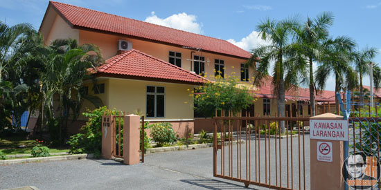

ABOUT US

Rumah Anak Yatim Mak Teh is an initiative of a former elected representative there. The endowed land has built this welfare home specifically for orphans and the poor around the state of Perlis. The managing fund is from the elected representative along with contributions from the public.
Rumah Makteh used to accept male orphans, however, now they only focus on taking female orphans because it is easier to take care of.
More Info...
Importants !

Contact us!
suriajaafar55@yahoo.com
+604 9770748
+604 9770 749